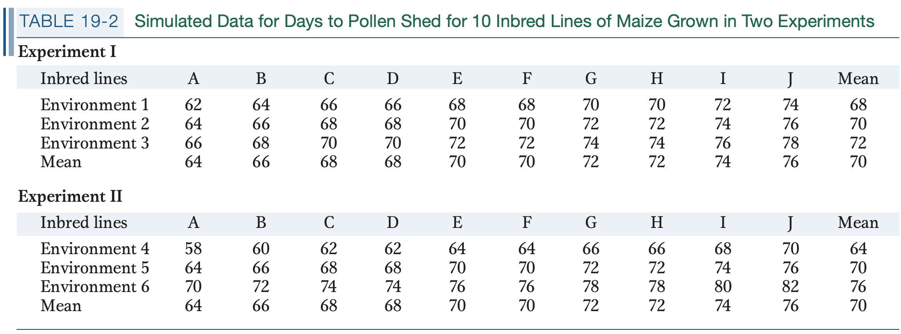
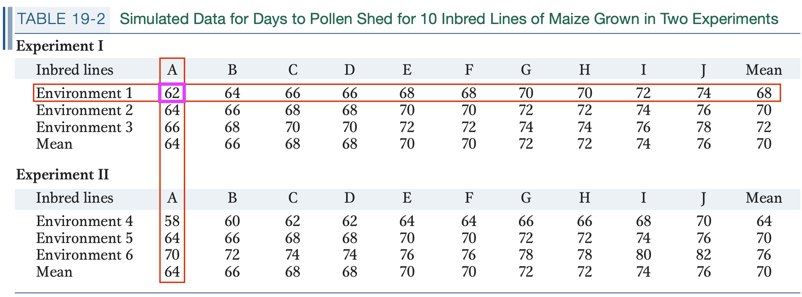
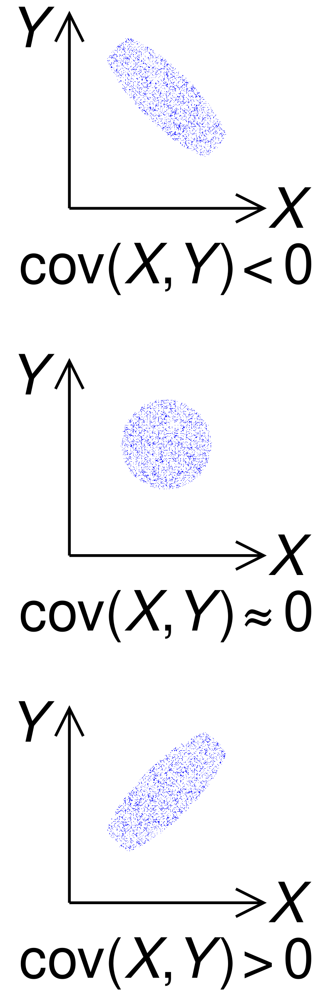
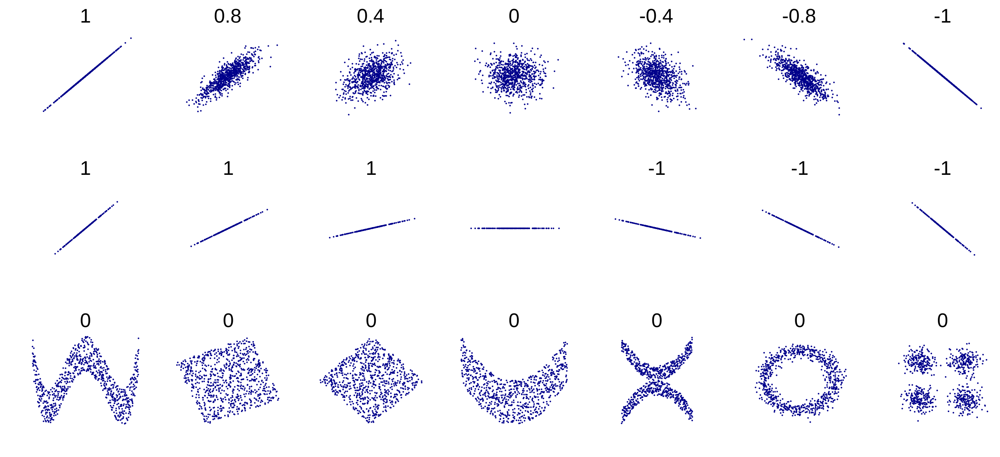
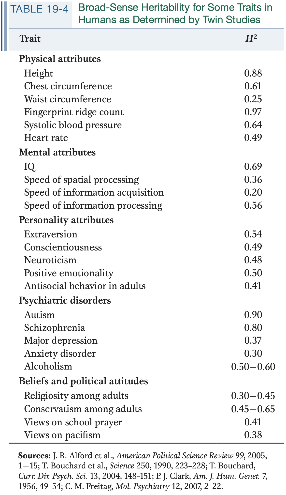

<!DOCTYPE html>
<html lang="en">
  <head>
    <meta charset="utf-8" />
    <meta name="viewport" content="width=device-width, initial-scale=1.0, maximum-scale=1.0, user-scalable=no" />

    <title></title>
    <link rel="stylesheet" href="dist/reveal.css" />
    <link rel="stylesheet" href="dist/theme/beige.css" id="theme" />
    <link rel="stylesheet" href="plugin/highlight/zenburn.css" />
	<link rel="stylesheet" href="css/layout.css" />
	<link rel="stylesheet" href="plugin/customcontrols/style.css">
	<link rel="stylesheet" href="plugin/chalkboard/style.css">

	<link rel="stylesheet" href="plugin/reveal-pointer/pointer.css" />

    <link rel="stylesheet" href="css/custom.css" />

    <script defer src="dist/fontawesome/all.min.js"></script>

	<script type="text/javascript">
		var forgetPop = true;
		function onPopState(event) {
			if(forgetPop){
				forgetPop = false;
			} else {
				parent.postMessage(event.target.location.href, "app://obsidian.md");
			}
        }
		window.onpopstate = onPopState;
		window.onmessage = event => {
			if(event.data == "reload"){
				window.document.location.reload();
			}
			forgetPop = true;
		}

		function fitElements(){
			const itemsToFit = document.getElementsByClassName('fitText');
			for (const item in itemsToFit) {
				if (Object.hasOwnProperty.call(itemsToFit, item)) {
					var element = itemsToFit[item];
					fitElement(element,1, 1000);
					element.classList.remove('fitText');
				}
			}
		}

		function fitElement(element, start, end){

			let size = (end + start) / 2;
			element.style.fontSize = `${size}px`;

			if(Math.abs(start - end) < 1){
				while(element.scrollHeight > element.offsetHeight){
					size--;
					element.style.fontSize = `${size}px`;
				}
				return;
			}

			if(element.scrollHeight > element.offsetHeight){
				fitElement(element, start, size);
			} else {
				fitElement(element, size, end);
			}		
		}


		document.onreadystatechange = () => {
			fitElements();
			if (document.readyState === 'complete') {
				if (window.location.href.indexOf("?export") != -1){
					parent.postMessage(event.target.location.href, "app://obsidian.md");
				}
				if (window.location.href.indexOf("print-pdf") != -1){
					let stateCheck = setInterval(() => {
						clearInterval(stateCheck);
						window.print();
					}, 250);
				}
			}
	};


        </script>
  </head>
  <body>
    <div class="reveal">
      <div class="slides"><section  data-markdown><script type="text/template"><!-- .slide: class="drop" data-auto-animate="true" -->
<div class="" style="position: absolute; left: 0px; top: 0px; height: 700px; width: 960px; min-height: 700px; display: flex; flex-direction: column; align-items: center; justify-content: center" absolute="true">

## Inheritance of complex traits

</div></script></section><section  data-markdown><script type="text/template"><!-- .slide: class="drop" data-auto-animate="true" -->
<div class="" style="position: absolute; left: 0px; top: 0px; height: 700px; width: 960px; min-height: 700px; display: flex; flex-direction: column; align-items: center; justify-content: center" absolute="true">

## Inheritance of complex traits


<div class="footnotes" role="doc-endnotes">
<ol>
<li id="fn:1" role="doc-endnote" class="footnote"><p>

https://artpictures.club/autumn-2023.html

</p></li></ol>
</div>
</div></script></section><section  data-markdown><script type="text/template"><!-- .slide: class="drop" data-auto-animate="true" -->
<div class="" style="position: absolute; left: 0px; top: 0px; height: 700px; width: 960px; min-height: 700px; display: flex; flex-direction: column; align-items: center; justify-content: center" absolute="true">

## Quantitative Genetics
<div class="callout callout-color4">
<div class="callout-title">
<div class="callout-icon">

<i class="fas fa-question-circle" ></i>


</div>
<div class="callout-title-inner">

What does it study and what it doesn't?

</div>
</div>
<div class="callout-content">

</div>
</div>

- &shy;<!-- .element: class="fragment" data-fragment-index="1" -->Inheritance of quantitative traits and how they vary in a population
</div></script></section><section  data-markdown><script type="text/template"><!-- .slide: class="drop" data-auto-animate="true" -->
<div class="" style="position: absolute; left: 0px; top: 0px; height: 700px; width: 960px; min-height: 700px; display: flex; flex-direction: column; align-items: center; justify-content: center" absolute="true">

## Quantitative Genetics
- Many traits have <mark>continuous variations</mark>. These are known as <mark>quantitative traits</mark>.
- &shy;<!-- .element: class="fragment" data-fragment-index="1" -->Name some quantitative traits
- &shy;<!-- .element: class="fragment" data-fragment-index="2" -->Name examples of Mendelian traits (binary or discontinuous)
</div>

<aside class="notes"><ul>
<li>&shy;<!-- .element: class="fragment" data-fragment-index="3" -->pea color</li>
<li>&shy;<!-- .element: class="fragment" data-fragment-index="4" -->In human: ability to taste phenylthiocarbamide, albinism, blood type etc.</li>
</ul>
</aside></script></section><section  data-markdown><script type="text/template"><!-- .slide: class="drop" data-auto-animate="true" -->
<div class="" style="position: absolute; left: 0px; top: 0px; height: 700px; width: 960px; min-height: 700px; display: flex; flex-direction: column; align-items: center; justify-content: center" absolute="true">

### Is quantitative trait compatible with Mendelian Genetics?
- When Mendelian genetics was rediscovered in the early 1900s, emphasis was placed on one to three loci segregating, creating discrete phenotypic categories. <mark>seems incompatible with continuously varying traits</mark> (**why?**)
</div></script></section><section  data-markdown><script type="text/template"><!-- .slide: class="drop" data-auto-animate="true" -->
<div class="" style="position: absolute; left: 0px; top: 0px; height: 700px; width: 960px; min-height: 700px; display: flex; flex-direction: column; align-items: center; justify-content: center" absolute="true">

### Is quantitative trait compatible with Mendelian Genetics?
<div class="callout callout-color9">
<div class="callout-title">
<div class="callout-icon">

<i class="fas fa-quote-left" ></i>


</div>
<div class="callout-title-inner">

In the early 1900s, when Mendel’s laws were rediscovered, controversy arose about whether these laws were applicable to continuous traits. A group known as the _biometricians_ ... saw no evidence that such traits followed Mendel’s laws, ... concluded that Mendelian loci do not control continuous traits. 

</div>
</div>
<div class="callout-content">

</div>
</div>

- &shy;<!-- .element: class="fragment" data-fragment-index="1" -->This made Mendelian genetics initially an obstacle to the acceptance of Darwin's evolutionary theory.
- &shy;<!-- .element: class="fragment" data-fragment-index="2" --><mark>What do you think?</mark> 


<div class="footnotes" role="doc-endnotes">
<ol>
<li id="fn:1" role="doc-endnote" class="footnote"><p>

Introduction to Genetic Analysis, ed 11, p716

</p></li></ol>
</div>
</div></script></section><section ><section data-markdown><script type="text/template"><!-- .slide: class="drop" -->
<div class="" style="position: absolute; left: 0px; top: 0px; height: 700px; width: 960px; min-height: 700px; display: flex; flex-direction: column; align-items: center; justify-content: center" absolute="true">

<div class="callout callout-color9">
<div class="callout-title">
<div class="callout-icon">

<i class="fas fa-quote-left" ></i>


</div>
<div class="callout-title-inner">

Multifactorial Hypothesis

</div>
</div>
<div class="callout-content">

In the early 1900s, William Bateson and George Yule suggested that continuous traits are governed by a combination of multiple Mendelian loci, each with a small effect on the trait, and environmental factors.

</div>
</div>

- &shy;<!-- .element: class="fragment" data-fragment-index="1" --><mark>How would this work?</mark>
- &shy;<!-- .element: class="fragment" data-fragment-index="2" -->If a trait is controlled by one locus with two alleles (A/a), how many possible trait values can we obtain?
- &shy;<!-- .element: class="fragment" data-fragment-index="3" -->How about two loci? Three? Ten?
</div></script></section><section data-markdown><script type="text/template"><!-- .slide: class="drop" -->
<div class="" style="position: absolute; left: 0px; top: 0px; height: 700px; width: 960px; min-height: 700px; display: flex; flex-direction: column; align-items: center; justify-content: center" absolute="true">

### Multifactorial Hypothesis: one locus

</div></script></section><section data-markdown><script type="text/template"><!-- .slide: class="drop" -->
<div class="" style="position: absolute; left: 0px; top: 0px; height: 700px; width: 960px; min-height: 700px; display: flex; flex-direction: column; align-items: center; justify-content: center" absolute="true">

### Multifactorial Hypothesis: two loci, additive

</div></script></section><section data-markdown><script type="text/template"><!-- .slide: class="drop" -->
<div class="" style="position: absolute; left: 0px; top: 0px; height: 700px; width: 960px; min-height: 700px; display: flex; flex-direction: column; align-items: center; justify-content: center" absolute="true">

### Multifactorial Hypothesis: ten loci, additive


<div class="footnotes" role="doc-endnotes">
<ol>
<li id="fn:1" role="doc-endnote" class="footnote"><p>

code [here](https://github.com/hezhaobin/2024-SJTU-Popgen/blob/8b701ac1748e5c3a64b9622adb3a891106683881/10-asset/13-analyses/20250515-simulate-multifactorial-hypothesis.R)

</p></li></ol>
</div>
</div></script></section><section data-markdown><script type="text/template"><!-- .slide: class="drop" -->
<div class="" style="position: absolute; left: 0px; top: 0px; height: 700px; width: 960px; min-height: 700px; display: flex; flex-direction: column; align-items: center; justify-content: center" absolute="true">

### Multifactorial Hypothesis

</div></script></section></section><section ><section data-markdown><script type="text/template"><!-- .slide: class="drop" -->
<div class="" style="position: absolute; left: 0px; top: 0px; height: 700px; width: 960px; min-height: 700px; display: flex; flex-direction: column; align-items: center; justify-content: center" absolute="true">

### Define the "genetic architecture" of a quantitative trait
- &shy;<!-- .element: class="fragment" data-fragment-index="1" -->**Genetic architecture**: description of all of the genetic factors that influence a trait
	- &shy;<!-- .element: class="fragment" data-fragment-index="2" --><mark>property of a specific population, can vary among populations</mark> (**why?**)
	  
	- &shy;<!-- .element: class="fragment" data-fragment-index="3" -->different alleles segregate in different pops, and different populations experience different environments.
- &shy;<!-- .element: class="fragment" data-fragment-index="4" -->**Types of traits and inheritance** (below)
</div>

<aside class="notes"><ul>
<li>Quantitative traits that are controlled by multiple genes --&gt; &quot;polygenic&quot;, often associated with &quot;complex trait/disease&quot;</li>
<li>&shy;<!-- .element: class="fragment" data-fragment-index="5" -->Understanding the inheritance of complex traits is one of the most important challenges facing geneticists in the twenty-first century</li>
</ul>
</aside></script></section><section data-markdown><script type="text/template"><!-- .slide: class="drop" data-auto-animate="true" -->
<div class="" style="position: absolute; left: 0px; top: 0px; height: 700px; width: 960px; min-height: 700px; display: flex; flex-direction: column; align-items: center; justify-content: center" absolute="true">

### Types of traits and inheritance
- **Continuous trait** is one that can take on a potentially infinite number of states over a continuous range, e.g., human height.
  
	- &shy;<!-- .element: class="fragment" data-fragment-index="1" --><mark>typically have complex inheritance</mark> involving multiple genetic and environmental factors.
- &shy;<!-- .element: class="fragment" data-fragment-index="2" -->**Categorical trait** is one where individuals in a population can be sorted into discrete categories, e.g., purple vs white flower or tall vs short stems in Mendel's pea plants.
	- &shy;<!-- .element: class="fragment" data-fragment-index="3" --><mark>typically controlled by one or two genes</mark>, hence exhibiting simple inheritance
</div></script></section><section data-markdown><script type="text/template"><!-- .slide: class="drop" data-auto-animate="true" -->
<div class="" style="position: absolute; left: 0px; top: 0px; height: 700px; width: 960px; min-height: 700px; display: flex; flex-direction: column; align-items: center; justify-content: center" absolute="true">

### Types of traits and inheritance
- **Threshold trait**: often used in medical genetics, where individuals are classified into "disease" and "non-disease" groups, e.g., diabetes
  
	- &shy;<!-- .element: class="fragment" data-fragment-index="1" -->having multiple genetic and environmental factors
	  
	- &shy;<!-- .element: class="fragment" data-fragment-index="2" -->individuals who have a certain number of risk factors combined exceed a threshold and develop the disease ("buffering" hypothesis)
- &shy;<!-- .element: class="fragment" data-fragment-index="3" -->**Meristic trait**, or "counting trait", can take on a number of discrete values.
</div></script></section></section><section  data-markdown><script type="text/template"><!-- .slide: class="drop" -->
<div class="" style="position: absolute; left: 0px; top: 0px; height: 700px; width: 960px; min-height: 700px; display: flex; flex-direction: column; align-items: center; justify-content: center" absolute="true">

### Statistical description of a quantitative trait

**Mean**: the arithmetic average of a set of data

`$\bar{X}=\dfrac{\sum{X_i}}{n}$`

**Variance** is a measure of the deviation from the mean

`$\sigma_X^2=E[(X-\mu)^2]=E[X^2]-E[X]^2$`

`$\sigma_X^2=\frac{1}{n}\sum{(X_i-\bar{X})^2}$`

`$s_X^2=\frac{1}{n-1}\sum{(X_i-\bar{X})^2}$`
</div></script></section><section  data-markdown><script type="text/template"><!-- .slide: class="drop" -->
<div class="" style="position: absolute; left: 0px; top: 0px; height: 700px; width: 960px; min-height: 700px; display: flex; flex-direction: column; align-items: center; justify-content: center" absolute="true">

### More on Mean and Variance
- population mean, sample mean, expectation of random variable
- &shy;<!-- .element: class="fragment" data-fragment-index="1" -->We have a binomially distributed random variable `$X\sim B(n,p)$`
  
	- &shy;<!-- .element: class="fragment" data-fragment-index="2" -->what is its mean, variance?
- &shy;<!-- .element: class="fragment" data-fragment-index="3" -->What's the relationship and difference between sample variance, sample standard deviation (SD) and standard error of the mean (SEM)?
</div></script></section><section  data-markdown><script type="text/template"><!-- .slide: class="drop" -->
<div class="" style="position: absolute; left: 0px; top: 0px; height: 700px; width: 960px; min-height: 700px; display: flex; flex-direction: column; align-items: center; justify-content: center" absolute="true">

### Normal distribution
<split left="1" right="2" gap="1" align="top">


- `$X \sim N(\mu, \sigma^2)$`
- &shy;<!-- .element: class="fragment" data-fragment-index="1" -->`$f(x)=\frac{1}{\sqrt{2\pi\sigma^2}}e^{-\frac{(x-\mu)^2}{2\sigma^2}}$`
- &shy;<!-- .element: class="fragment" data-fragment-index="2" -->Can mean and variance vary independently?
	- &shy;<!-- .element: class="fragment" data-fragment-index="3" -->is that generally true of all distributions?
</split>
</div>

<aside class="notes"><ul>
<li>panel a: an example using height data for 660 women from the United States collected by the Centers for Disease Control and Prevention</li>
</ul>
</aside></script></section><section  data-markdown><script type="text/template"><!-- .slide: class="drop" data-auto-animate="true" -->
<div class="" style="position: absolute; left: 0px; top: 0px; height: 700px; width: 960px; min-height: 700px; display: flex; flex-direction: column; align-items: center; justify-content: center" absolute="true">

### A simple genetic model for quantitative traits
<div class="callout callout-color1">
<div class="callout-title">
<div class="callout-icon">

<i class="fas fa-clipboard-list" ></i>


</div>
<div class="callout-title-inner">

**What is a (mathematical) model?**

</div>
</div>
<div class="callout-content">

- &shy;<!-- .element: class="fragment" data-fragment-index="1" -->simplified representation of a complex phenomenon.

- &shy;<!-- .element: class="fragment" data-fragment-index="2" -->can differ in complexity

- &shy;<!-- .element: class="fragment" data-fragment-index="3" -->`$volume=f(time)$`

- &shy;<!-- .element: class="fragment" data-fragment-index="4" -->`$volume=f(rate\times time)$`

- &shy;<!-- .element: class="fragment" data-fragment-index="5" -->more complex = better?

</div>
</div>
</div></script></section><section  data-markdown><script type="text/template"><!-- .slide: class="drop" data-auto-animate="true" -->
<div class="" style="position: absolute; left: 0px; top: 0px; height: 700px; width: 960px; min-height: 700px; display: flex; flex-direction: column; align-items: center; justify-content: center" absolute="true">

### A simple genetic model for quantitative traits
- A simple genetic model for Yao's height
	- &shy;<!-- .element: class="fragment" data-fragment-index="1" -->229 cm, 59 cm taller than an average man in Shanghai
	- &shy;<!-- .element: class="fragment" data-fragment-index="2" -->`$X=\bar{X}+g+e$`
	- &shy;<!-- .element: class="fragment" data-fragment-index="3" -->`$x=g+e=59 cm$`
	- &shy;<!-- .element: class="fragment" data-fragment-index="4" -->how to estimate `$g$` and `$e$`?
</div></script></section><section  data-markdown><script type="text/template"><!-- .slide: class="drop" data-auto-animate="true" -->
<div class="" style="position: absolute; left: 0px; top: 0px; height: 700px; width: 960px; min-height: 700px; display: flex; flex-direction: column; align-items: center; justify-content: center" absolute="true">

### A simple genetic model for quantitative traits

</div></script></section><section  data-markdown><script type="text/template"><!-- .slide: class="drop" -->
<div class="" style="position: absolute; left: 0px; top: 0px; height: 700px; width: 960px; min-height: 700px; display: flex; flex-direction: column; align-items: center; justify-content: center" absolute="true">

### A simple genetic model for quantitative traits

</div></script></section><section  data-markdown><script type="text/template"><!-- .slide: class="drop" -->
<div class="" style="position: absolute; left: 0px; top: 0px; height: 700px; width: 960px; min-height: 700px; display: flex; flex-direction: column; align-items: center; justify-content: center" absolute="true">


- `$X=\bar{X}+g+e$`, 
- &shy;<!-- .element: class="fragment" data-fragment-index="1" -->`$62=70-6-2$`
- &shy;<!-- .element: class="fragment" data-fragment-index="2" -->How to calculate `$V_X$`, `$V_g$` and _`$V_e$`?
</div></script></section><section  data-markdown><script type="text/template"><!-- .slide: class="drop" -->
<div class="" style="position: absolute; left: 0px; top: 0px; height: 700px; width: 960px; min-height: 700px; display: flex; flex-direction: column; align-items: center; justify-content: center" absolute="true">

### Genetic and Environment Variances
- Let `$x=X-\bar{X}=g+e$`
- &shy;<!-- .element: class="fragment" data-fragment-index="1" -->`$V[x]=E[x^2]-E[x]^2=E[(g+e)^2]+0$`
- &shy;<!-- .element: class="fragment" data-fragment-index="2" -->`$V[x]=E[g^2+e^2+2ge]=V_g+V_e+2COV_{ge}$`
- &shy;<!-- .element: class="fragment" data-fragment-index="3" -->What if genetic and environmental factors are not independent?
- &shy;<!-- .element: class="fragment" data-fragment-index="4" -->Introduce **Covariance**
</div></script></section><section  data-markdown><script type="text/template"><!-- .slide: class="drop" -->
<div class="" style="position: absolute; left: 0px; top: 0px; height: 700px; width: 960px; min-height: 700px; display: flex; flex-direction: column; align-items: center; justify-content: center" absolute="true">

## Covariance
<split left="1" right="2">



- `$cov(X,Y)=E[(X-E[X])(Y-E[Y])]$`
- &shy;<!-- .element: class="fragment" data-fragment-index="1" -->`$cov(X,Y)=E[XY]-E[X]E[Y]$`
- &shy;<!-- .element: class="fragment" data-fragment-index="2" --> To estimate from the data
	- &shy;<!-- .element: class="fragment" data-fragment-index="3" -->`$cov(X,Y)=\frac{1}{n}\sum\limits_{i}(X_i-\bar{X})(Y_i-\bar{Y})$`
	- &shy;<!-- .element: class="fragment" data-fragment-index="4" -->`$cov(X,Y)=\frac{1}{n}\sum\limits_{i}(x_i y_i)$`
- &shy;<!-- .element: class="fragment" data-fragment-index="5" -->Now, back to `$Var(X)$`
	- &shy;<!-- .element: class="fragment" data-fragment-index="6" -->`$Var(X)=Var(g+e)=E[(g+e)^2]$`
	- &shy;<!-- .element: class="fragment" data-fragment-index="7" -->`$Var(X)=E[g^2]+E[e^2]+2E[ge]$`
	- &shy;<!-- .element: class="fragment" data-fragment-index="8" -->`$Var(X)=V_g+V_e+2COV_{g,e}$`
</split>


<div class="footnotes" role="doc-endnotes">
<ol>
<li id="fn:1" role="doc-endnote" class="footnote"><p>

By Cmglee - Own work, CC BY-SA 4.0, [link](https://commons.wikimedia.org/w/index.php?curid=90452334)

</p></li></ol>
</div>
</div></script></section><section ><section data-markdown><script type="text/template"><!-- .slide: class="drop" data-auto-animate="true" -->
<div class="" style="position: absolute; left: 0px; top: 0px; height: 700px; width: 960px; min-height: 700px; display: flex; flex-direction: column; align-items: center; justify-content: center" absolute="true">

### Correlation between traits
- Statistically, **correlation**, or **dependence**, is any statistical non-independent relationship between two random variables.
	- &shy;<!-- .element: class="fragment" data-fragment-index="1" -->although "correlation" may indicate any type of relationship, a _linear relationship_ is often implied.
- &shy;<!-- .element: class="fragment" data-fragment-index="2" -->There are many ways to measure the strength of correlation. The most common one is the **Pearson's correlation coefficient**, often written as `$\rho$`
	- &shy;<!-- .element: class="fragment" data-fragment-index="3" -->`$\rho_{X,Y}=\dfrac{cov(X,Y)}{\sigma_X \sigma_Y}=\dfrac{E[(X-E[X])(Y-E[Y])]}{\sqrt{V_X V_Y}}$`
	- &shy;<!-- .element: class="fragment" data-fragment-index="4" -->"normalized covariance", independent of the variance scales
	- &shy;<!-- .element: class="fragment" data-fragment-index="5" -->if `$g$` and `$e$` are correlated, we cannot use `$V_X=V_g+V_e$`
</div></script></section><section data-markdown><script type="text/template"><!-- .slide: class="drop" -->
<div class="" style="position: absolute; left: 0px; top: 0px; height: 700px; width: 960px; min-height: 700px; display: flex; flex-direction: column; align-items: center; justify-content: center" absolute="true">

### What can and can't Pearson's correlation coefficient tell you?




<div class="footnotes" role="doc-endnotes">
<ol>
<li id="fn:1" role="doc-endnote" class="footnote"><p>

By DenisBoigelot, original uploader was Imagecreator - Owggggn work, original uploader was Imagecreator, CC0, [link](https://commons.wikimedia.org/w/index.php?curid=15165296)

</p></li></ol>
</div>
</div></script></section></section><section  data-markdown><script type="text/template"><!-- .slide: class="drop" data-auto-animate="true" -->
<div class="" style="position: absolute; left: 0px; top: 0px; height: 700px; width: 960px; min-height: 700px; display: flex; flex-direction: column; align-items: center; justify-content: center" absolute="true">

### Broad-sense Heritability
- How much of the variation in a population is due to genetic factors and how much to environmental factors?
- &shy;<!-- .element: class="fragment" data-fragment-index="1" -->Define **broad-sense heritability (`$H^2$`)**: 
	- &shy;<!-- .element: class="fragment" data-fragment-index="2" -->`$H^2=\dfrac{V_g}{V_X}$`
	- &shy;<!-- .element: class="fragment" data-fragment-index="3" -->"broad sense" because it encompasses several ways by which genes contribute to variation, including **additive** and **epistatic** effects.
- &shy;<!-- .element: class="fragment" data-fragment-index="4" -->How to estimate broad-sense heritability?
</div></script></section><section  data-markdown><script type="text/template"><!-- .slide: class="drop" data-auto-animate="true" -->
<div class="" style="position: absolute; left: 0px; top: 0px; height: 700px; width: 960px; min-height: 700px; display: flex; flex-direction: column; align-items: center; justify-content: center" absolute="true">

### Broad-sense Heritability
- In experimental model organisms, one can estimate `$H^2$` using **inbred lines**. By rearing many genetically identical individuals from each inbred line in randomly assigned environments, one can tease apart the genetic vs environmental variance.
- &shy;<!-- .element: class="fragment" data-fragment-index="1" -->In humans, one can use **twin studies** to estimate broad sense heritability.
</div></script></section><section  data-markdown><script type="text/template"><!-- .slide: class="drop" -->
<div class="" style="position: absolute; left: 0px; top: 0px; height: 700px; width: 960px; min-height: 700px; display: flex; flex-direction: column; align-items: center; justify-content: center" absolute="true">


- &shy;<!-- .element: class="fragment" data-fragment-index="1" -->**Experiment I**
	- &shy;<!-- .element: class="fragment" data-fragment-index="2" -->`$V_g=12.0$`, `$V_X=14.67$` (unit: days^2), what is `$H^2$`?
- &shy;<!-- .element: class="fragment" data-fragment-index="3" -->**Experiment II**
	- &shy;<!-- .element: class="fragment" data-fragment-index="4" -->`$V_g=12.0$`, `$V_e=24$` (unit: days^2), what is `$H^2$`?
- &shy;<!-- .element: class="fragment" data-fragment-index="5" -->Same inbred lines, different `$H^2$`, <mark>why</mark>?
</div></script></section><section  data-markdown><script type="text/template"><!-- .slide: class="drop" data-auto-animate="true" -->
<div class="" style="position: absolute; left: 0px; top: 0px; height: 700px; width: 960px; min-height: 700px; display: flex; flex-direction: column; align-items: center; justify-content: center" absolute="true">

### Measuring heritability in humans using twin studies
- In twin studies, one uses sets of identical twins who were separated shortly after birth and reared apart by unrelated adoptive parents.
- &shy;<!-- .element: class="fragment" data-fragment-index="1" -->We have many (n) sets of twins: 
	- &shy;<!-- .element: class="fragment" data-fragment-index="2" -->`$(X_1'\, X_1''), (X_2'\, X_2'')...(X_n'\, X_n'')$`
- &shy;<!-- .element: class="fragment" data-fragment-index="3" -->We can express the phenotypic deviations for one set of twins as
	- &shy;<!-- .element: class="fragment" data-fragment-index="4" -->`$x'=g+e'$` and `$x''=g+e''$`
</div></script></section><section  data-markdown><script type="text/template"><!-- .slide: class="drop" data-auto-animate="true" -->
<div class="" style="position: absolute; left: 0px; top: 0px; height: 700px; width: 960px; min-height: 700px; display: flex; flex-direction: column; align-items: center; justify-content: center" absolute="true">

### Measuring heritability in humans using twin studies
- `$cov(x', x'')=E[x'x'']=E[(g+e')(g+e'')]$`
- &shy;<!-- .element: class="fragment" data-fragment-index="1" -->`$cov(x', x'')=E[g^2]+E[ge']+E[ge'']+E[e'e'']$`
- &shy;<!-- .element: class="fragment" data-fragment-index="2" -->`$cov(x', x'')=E[g^2]+0=V_g$`
- &shy;<!-- .element: class="fragment" data-fragment-index="3" -->`$H^2=\frac{V_g}{V_x}=\frac{cov(x',x'')}{V_x}=\frac{cov(x',x'')}{\sqrt{V_{x'}V_{x''}}}=r_{x',x''}$`
- &shy;<!-- .element: class="fragment" data-fragment-index="4" -->`$H^2$` <mark>is equivalent to the correlation between (monozygotic) twins</mark>.
</div>

<aside class="notes"><ul>
<li>&shy;<!-- .element: class="fragment" data-fragment-index="5" --><code>$E[g^2]=V_g$</code></li>
<li>&shy;<!-- .element: class="fragment" data-fragment-index="6" --><code>$E[ge&#39;]=E[ge&#39;&#39;]=0$</code>, (no correlation between genotype and environment)</li>
<li>&shy;<!-- .element: class="fragment" data-fragment-index="7" --><code>$E[e&#39;e&#39;&#39;]=0$</code> as the twins are randomly assigned to families;</li>
<li>&shy;<!-- .element: class="fragment" data-fragment-index="8" -->Hence, <code>$cov(x&#39;, x&#39;&#39;)=V_g$</code></li>
</ul>
</aside></script></section><section  data-markdown><script type="text/template"><!-- .slide: class="drop" -->
<div class="" style="position: absolute; left: 0px; top: 0px; height: 700px; width: 960px; min-height: 700px; display: flex; flex-direction: column; align-items: center; justify-content: center" absolute="true">

<div class="" style="position: absolute; left: 1%; top: 1%; height: 80%; width: 50%; display: flex; flex-direction: column; align-items: center; justify-content: flex-start" align="top">

<table>
    <tr>
        <td></td>
        <td>Twin</td>
        <td></td>
    </tr>
    <tr>
        <td></td>
        <td>X&#39;</td>
        <td>X&#39;&#39;</td>
    </tr>
    <tr>
        <td>1</td>
        <td>100</td>
        <td>110</td>
    </tr>
    <tr>
        <td>2</td>
        <td>125</td>
        <td>118</td>
    </tr>
    <tr>
        <td>3</td>
        <td>97</td>
        <td>90</td>
    </tr>
    <tr>
        <td>4</td>
        <td>92</td>
        <td>104</td>
    </tr>
    <tr>
        <td>5</td>
        <td>86</td>
        <td>89</td>
    </tr>
</table>
</div>

<div class="" style="position: absolute; left: 1%; top: 75%; height: 10%; width: 50%; display: flex; flex-direction: column; align-items: center; justify-content: flex-start" align="top">

`$H^2=\frac{119.2}{154.3}=0.77$`
</div>

<div class="" style="position: absolute; left: 49%; top: 1%; height: 100%; width: 50%; display: flex; flex-direction: column; align-items: center; justify-content: center" >



</div>
</div></script></section><section  data-markdown><script type="text/template"><!-- .slide: class="drop" data-auto-animate="true" -->
<div class="" style="position: absolute; left: 0px; top: 0px; height: 700px; width: 960px; min-height: 700px; display: flex; flex-direction: column; align-items: center; justify-content: center" absolute="true">

## Narrow-Sense Heritability

<div class="callout callout-color4">
<div class="callout-title">
<div class="callout-icon">

<i class="fas fa-question-circle" ></i>


</div>
<div class="callout-title-inner">

Why do we need another measure of heritability?

</div>
</div>
<div class="callout-content">

- &shy;<!-- .element: class="fragment" data-fragment-index="1" -->In diploid populations, parents pass on alleles or genotypes?

- &shy;<!-- .element: class="fragment" data-fragment-index="2" -->What is dominance? epistasis? Are they transmitted from parents to offspring?

</div>
</div>

- &shy;<!-- .element: class="fragment" data-fragment-index="3" -->**Additive Genetic Variance**
	- &shy;<!-- .element: class="fragment" data-fragment-index="4" -->the "additive effect" of an allele is defined as its **average effect** when it is paired with random alleles at its own locus and expressed across all possible genetic backgrounds (all possible alleles at other loci) in the population
</div></script></section><section  data-markdown><script type="text/template"><!-- .slide: class="drop" data-auto-animate="true" -->
<div class="" style="position: absolute; left: 0px; top: 0px; height: 700px; width: 960px; min-height: 700px; display: flex; flex-direction: column; align-items: center; justify-content: center" absolute="true">

## Narrow-Sense Heritability
- `$V_X=V_a+V_d+V_i+V_e$`
  
	can get more complex with **G x E** interactions
- &shy;<!-- .element: class="fragment" data-fragment-index="1" -->`$h^2=\dfrac{V_a}{V_X}$`
  
	useful because it predicts how well a trait responds to selection (for breeders, and also in agriculture and conservation) <!-- .element: class="fragment" -->
	
	Can be estimated using parent-offspring correlation or half-sibs. <!-- .element: class="fragment" -->
	
	`$h^2=\dfrac{V_a}{V_X}=\dfrac{2COV_{P,O}}{V_X}$` <!-- .element: class="fragment" -->
</div></script></section></div>
    </div>

    <script src="dist/reveal.js"></script>

    <script src="plugin/markdown/markdown.js"></script>
    <script src="plugin/highlight/highlight.js"></script>
    <script src="plugin/zoom/zoom.js"></script>
    <script src="plugin/notes/notes.js"></script>
    <script src="plugin/math/math.js"></script>
	<script src="plugin/mermaid/mermaid.js"></script>
	<script src="plugin/chart/chart.min.js"></script>
	<script src="plugin/chart/plugin.js"></script>
	<script src="plugin/menu/menu.js"></script>
	<script src="plugin/customcontrols/plugin.js"></script>
	<script src="plugin/chalkboard/plugin.js"></script>
	<script src="plugin/reveal-pointer/pointer.js"></script>

    <script>
      function extend() {
        var target = {};
        for (var i = 0; i < arguments.length; i++) {
          var source = arguments[i];
          for (var key in source) {
            if (source.hasOwnProperty(key)) {
              target[key] = source[key];
            }
          }
        }
        return target;
      }

	  function isLight(color) {
		let hex = color.replace('#', '');

		// convert #fff => #ffffff
		if(hex.length == 3){
			hex = `${hex[0]}${hex[0]}${hex[1]}${hex[1]}${hex[2]}${hex[2]}`;
		}

		const c_r = parseInt(hex.substr(0, 2), 16);
		const c_g = parseInt(hex.substr(2, 2), 16);
		const c_b = parseInt(hex.substr(4, 2), 16);
		const brightness = ((c_r * 299) + (c_g * 587) + (c_b * 114)) / 1000;
		return brightness > 155;
	}

	var bgColor = getComputedStyle(document.documentElement).getPropertyValue('--r-background-color').trim();
	var isLight = isLight(bgColor);

	if(isLight){
		document.body.classList.add('has-light-background');
	} else {
		document.body.classList.add('has-dark-background');
	}

      // default options to init reveal.js
      var defaultOptions = {
        controls: true,
        progress: true,
        history: true,
        center: true,
        transition: 'default', // none/fade/slide/convex/concave/zoom
        plugins: [
          RevealMarkdown,
          RevealHighlight,
          RevealZoom,
          RevealNotes,
          RevealMath.MathJax3,
		  RevealMermaid,
		  RevealChart,
		  RevealCustomControls,
		  RevealMenu,
	      RevealPointer,
		  RevealChalkboard, 
        ],


    	allottedTime: 120 * 1000,

		mathjax3: {
			mathjax: 'plugin/math/mathjax/tex-mml-chtml.js',
		},
		markdown: {
		  gfm: true,
		  mangle: true,
		  pedantic: false,
		  smartLists: false,
		  smartypants: false,
		},

		mermaid: {
			theme: isLight ? 'default' : 'dark',
		},

		customcontrols: {
			controls: [
				{ icon: '<i class="fa fa-pen-square"></i>',
				title: 'Toggle chalkboard (B)',
				action: 'RevealChalkboard.toggleChalkboard();'
				},
				{ icon: '<i class="fa fa-pen"></i>',
				title: 'Toggle notes canvas (C)',
				action: 'RevealChalkboard.toggleNotesCanvas();'
				},
			]
		},
		menu: {
			loadIcons: false
		}
      };

      // options from URL query string
      var queryOptions = Reveal().getQueryHash() || {};

      var options = extend(defaultOptions, {"width":960,"height":700,"margin":0.04,"controls":true,"progress":true,"slideNumber":true,"transition":"fade","transitionSpeed":"default"}, queryOptions);
    </script>

    <script>
      Reveal.initialize(options);
    </script>
  </body>

  <!-- created with Advanced Slides -->
</html>
